原作者:Usman Ismail, Bilal Sheikh 译者:崔远智
在之前的文章中，我们已经看到了关于“如何基于Docker搭建一个Jenkins的CI环境”以及“利用Docker搭建持续集成环境”的阐述。因为使用了Docker，所以我们的集中控制构建环境可以扩展至任何数量的机器。同时，在Jenkins的CI环境基础上实现了全自动的持续构建、打包和测试。
本篇文章中，我们将更进一步，实现将项目持续发布到测试环境中去，实现测试的自动化运行。自动测试环境能够在产品正式上线前很好的帮助你发现问题。 同时，这个环境的经验也会对你如何持续发布产品到生产环境产生帮助，在接下来到几篇文章中我们也会持续探讨。
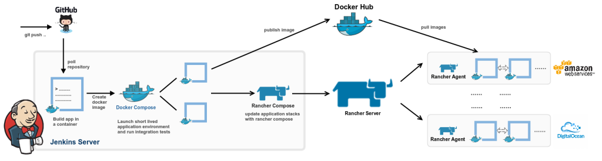
我们对应用完成构建和测试之后，就可以把它发布到长测环境，它甚至是外部可访问的。这个环境将允许QA甚至用户在产品发布到生产环境前进行测试。 这个环境是生产环境部署之前非常重要的一个环节，因为它能够让我们从真实环境中挖掘更多的bug，而不单单是自动化测试而以。我们通常把这个环境叫做“质保”环境或“集成环境”。 像上一篇文章一样，我们将使用go-messenger项目的go-auth组件来创建我们的测试环境。具体步骤如下：
1.在Rancher中创建一个集成环境
2.定义Docker Compose和Rancher Compose模版
3.使用Rancher创建应用栈
4.使用Rancher和AWS Route53管理DNS纪录
5.添加HTTPS支持
在Rancher界面中，有上角选择“Manage Environments”并且“Add Environment”。在弹出的界面中添加名字“Integration”并根据需求添加描述。 同时，你也要选择可以访问这个环境的用户和组织。
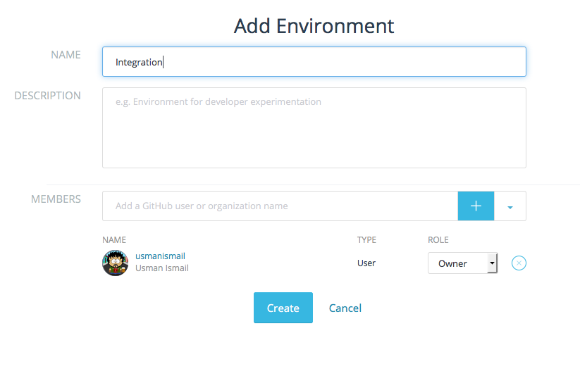
创建完成以后，在左上角选择你刚刚创建好的“Integration”环境。现在我们就可以创建一个应用栈了。另外，我们需要在右上角菜单选择“API & Keys”来添加API Key。 在弹出菜单中添加API Key Pair的名字。这个key会在接下来的创建Rancher Compose等步骤用到。 我们给密钥起名“JenkinsKey”，因为接下来的rancher compose要运行Jenkins实例。将“key”和“secret”拷贝下来并妥善保存，因为他们只会在这里显示一次。 注意：每一个环境都要使用单独的Key来管理，所以我们需要针对所有的环境都单独创建一个key。
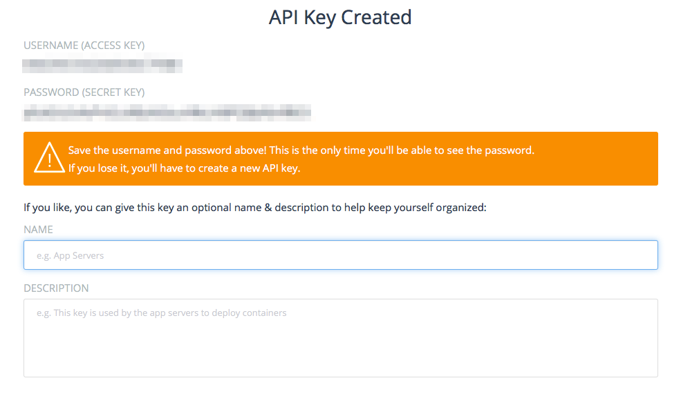
在上一篇文章中， 我们创建了docker compose模版来定义项目需要的容器类型，如下。我们将使用跟之前一样的docker compose模版，但是会增加新的auth-lb服务。 这样，就会在我们的go-auth服务前增加负载均衡服务，在所有的容器间进行分流。 在服务前增加负载均衡的目的是实现高可用和可扩展，使得在某一个或多个服务容器已经失效的情况下仍然可以提供服务。 此外，它还可以把负载分散到可能的不同物理主机上。
mysql-master: image: mysql environment: MYSQL_ROOT_PASSWORD: rootpass MYSQL_DATABASE: messenger MYSQL_USER: messenger MYSQL_PASSWORD: messenger expose: - "3306" stdin_open: true tty: true auth-service: tty: true command: - --db-host - mysql-master - -p - '9000' image: usman/go-auth:${auth_version} links: - mysql-master:mysql-master stdin_open: true auth-lb: ports: - '9000' expose: - 9090:9000 tty: true image: rancher/load-balancer-service links: - auth-service:auth-service stdin_open: true
我们正在用Rancher Compose来启动一个多主机环境，这和生产环境几乎一摸一样，同时也允许我们与其它服务一同测试集成环境，比如Rancher和Docker Hub等。 这和我们之前基于docker compose构建的仅限于作为独立的外部服务、在CI服务器上运行且不会向dockerhub提交镜像的环境不同，
现在我们要用Rancher Compose来构建一个多主机测试环境，而不是Docker Compose，我们同样需要定义一个rancher compose模版。 创建一个名为rancher-compose.yml的文件，然后添加下述内容。在这个文件中，我们为auth服务定义了2个容器，一个用来运行数据库，另一个运行负载均衡。
scale: 2 mysql-master: scale: 1 auth-lb scale: 1
接下来，我们为auth-service增加一个健康检查服务，确保我们能过检测这些容器何时能够启动并接受请求。 所以，我们为go-auth服务添加“/health” URI。auth-service在rancher-compose.yml文件中看起来应该是这个样子的：
auth-service scale: 1 health_check: port: 9000 interval: 2000 unhealthy_threshold: 3 request_line: GET /health HTTP/1.0 healthy_threshold: 2 response_timeout: 2000
我们在容器的9000端口上定义了一个健康检查，每2秒钟运行一次。它会向“/health”这个URI发送http请求，3个连续失败将标记容器为“不健康”， 2个连续成功则标记该容器为“健康”。
现在，我们已经定义好了模版，可以使用Rancher compose来启动我们的环境了。简单分为如下几步。 从go-messenger project下载rancher-compose CLI。 按照rancher-compose的帮助安装好rancher-compose。 一切安装好以后，按照下面的命令设置你的集成环境。
git clone https://github.com/usmanismail/go-messenger.git cd go-messenger/deploy #replace rancher-compose with the latest version you downloaded from rancher UI ./rancher-compose --project-name messenger-int \ --url http://YOUR_RANCHER_SERVER:PORT/v1/ \ --access-key\ --secret-key \ --verbose create
在UI中，你也应该能够看到stack和services了。注意，“create”命令只创建Stack但是不启动Service，你可以通过UI或者rancher-compose命令行来启动他们。
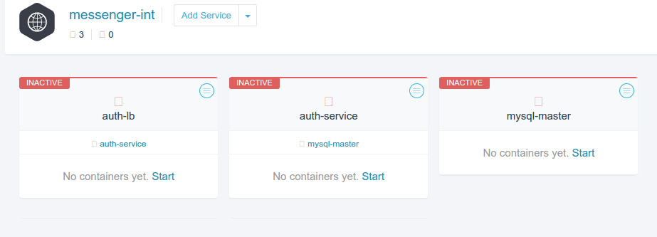
让我们尝试用rancher-compose命令行来启动服务。
./rancher-compose --project-name messenger-int \ --url http://YOUR_RANCHER_SERVER:PORT/v1/ \ --access-key\ --secret-key \ --verbose start
为确保所有服务工作正常，使用“auth-lb”服务所在主机的公共IP用下述命令创建一个用户。应该收到“200 OK”。 重复请求，应该收到“409 error”错误，说明数据库中已经存在此用户了。 到此，我们已经拥有了一个基本的集成环境，作为我们应用后续使用的长测环境
curl -i -silent -X PUT -d userid=-d password= :9000/user
因为这个环境要作为长测环境并对外可访问，所以我们要配置DNS和HTTPS。 这让我们可以在公司防火墙外更加安全的部署应用，同时用户也不必担心IP变化可能带来的困扰。 你可以自己选择DNS服务商，但今天我们要采用Amazon Route53来进行演示。 首先，在“AWS Console > Route 53 > Hosted Zones”里创建“Hosted Zone”。 这里，你要指定一个域名。同时，你也可以创建一个用户，为后续Rancher动态更新DNS纪录所用。 创建的路径是“AWS Console > IAMS > Users”，选择“Create New Users”。 注意保存好“Access Key”和“Secret Key”，后边会用到。 另外，你要给这个用户添加“AmazonRoute53FullAccess”才行，才能实现与Rancher的联动控制。
都弄好以后，在rancher server上选择“Applications > Catalog”并添加“Route 53 DNS”。 填写你之前纪录的“Hosted Zone”以及“Access Key”和“Secret Key”。 完成以后，在你的stack中就会看到一个叫做“route53”的服务。
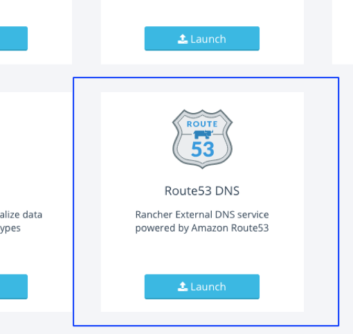
这个服务将会监听Rancher的事件，根据负载均衡的变化，自动的调整DNS纪录。 DNS纪录的格式是“[Loadbalancer].[stack].[environment].[domain]”，例如“goauth.integration.testing.gomessenger.com”。 有了Route53，负载均衡实例和数量变化的时候，我们就不用担心获取最新IP和主机名的问题了。
现在，我们的环境有了DNS纪录，支持HTTPS是一个好主意。所以，首先我们需要为域名申请一个SSL认证。 你可以从Comodo或其它这样的公司买一个可信根SSL认证。 当然，你也可以先自己生成一个，然后在找时间替换成可信认证。只是，使用自己生成的证书，用户会看到一个“This connection is untusted”的提示， 但数据传输还是使用SSL加密的。自己生成SSL证书时，首先你需要使用openssl命令生成一个SSL Key。 这里，你可以保存一下sha256指纹，以便后续对请求做一下手工严重，看看https是否真的生效了。 保证指纹一致，是防止中间人攻击的唯一方法。
openssl genrsa -out integration.gomessenger.com.key 2048 openssl req -new -x509 \ -key integration.gomessenger.com.key \ -out integration.gomessenger.com.crt \ -days 365 -subj /CN=integration.gomessenger.com openssl x509 -fingerprint -sha256 -in integration.gomessenger.com.crt SHA256 Fingerprint=E2:E5:86:09:F0:91:F4:3C:C2:DE:D1:40:9C:DD:AF:A2:0A:88:EE:19:0C:C5:A6:03:C9:9B:17:6E:8F:58:D2:C3
现在，可以把SSL证书和私钥上传到Rancher。可以通过Rancher UI的“Infrastructure tab > Certificates Section > Add Certificate”进行上传。 这里，需要起一个有意义的名字，描述可选。把私钥和SSL证书的内容拷贝到“Private Key”和“Certificate”输入框，确定。 稍等几秒，就会激活。
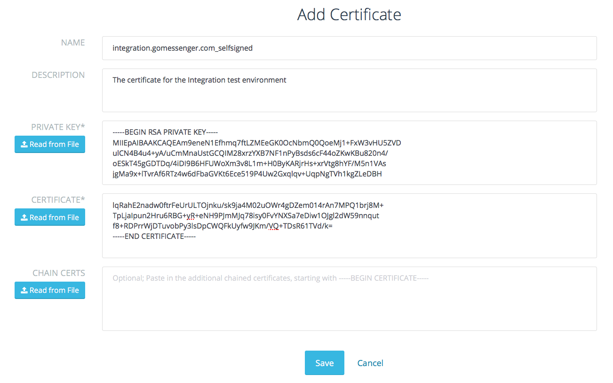
证书激活以后，就可以给环境添加HTTPS endpoint了。首先要修改docker-compose文件来增加SSL端口。 增加第二个端口(9001)使它可以从外部访问，打上标签“io.rancher.loadbalancer.ssl.ports”说明他是负载均衡的公共SSL接口。 进而，我们可以把外部的SSL请求路由到我们服务容器的9000端口上。通过“io.rancher.loadbalancer.target.auth-service”标签来实现这个端口映射。
auth-lb: ports: - '9000' - '9001' labels: io.rancher.loadbalancer.ssl.ports: '9001' io.rancher.loadbalancer.target.auth-service: 9000=9000,9001=9000 tty: true image: rancher/load-balancer-service links: - auth-service:auth-service stdin_open: true mysql-master: environment: ... ...
同样，我们也要更新一下rancher-compose文件，来指定SSL认证。添加“default_cert”参数。 这里，你需要删除并重新创建你的stack，因为目前无法更新以及部署的stack的参数。
auth-lb: scale: 1 default_cert: integration.gomessenger.com_selfsigned load_balancer_config: name: auth-lb config mysql-master: scale: 1 auth-service: scale: 1
为确保上述工作正确完成，我们可以首页curl命令尝试请求一下。9001端口，应该提示为不可信的认证。 我们可以使用“–insecure”来屏蔽掉这个提示。
# Http Request curl -i -silent -X PUT \ -d userid=\ -d password= \ http://integration.gomessenger.com:9000/user # Https Request with secure checking # Note Http(s) and 900(1) curl -i -silent -X PUT \ -d userid= \ -d password= \ https://integration.gomessenger.com:9001/user curl: (60) SSL certificate problem, verify that the CA cert is OK. Details: error:14090086:SSL routines:SSL3_GET_SERVER_CERTIFICATE:certificate verify failed # Https Request with insecure checking curl -i -silent -X PUT \ --insecure \ -d userid= \ -d password= \ https://integration.gomessenger.com:9001/user
测试环境创建完成了，现在我们终于可以回到本文的正题，扩展现有的Jenkins CI实现持续部署(CD - continuous deployment)
我们从把镜像发布到docker repository开始。为了简单起见，我们直接发布到公共到DockerHub repository， 然而，实际开发中我们一般会发布到私有到repository中去。在Jenkins中创建一个“Free Style”项目，定义任务名为“push-go-auth-image“。 完成以后，你将会被引导到配置页面，那里你可以配置把你的“go-auth”镜像提交到DockerHub的步骤。
这和之前定义的“go-auth-integration-test”任务非常相似，首先设置为“parameterized build”，添加“GO_AUTH_VERSION”参数。
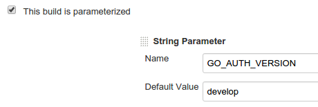
为了能够真正提交镜像，我们选择“Add build step”然后选择“Execute shell“参数。在返回的文本框中，添加下边的命令行。 命令行的意思分别是登陆docker hub和提交镜像。镜像被提交到了“usman/go-auth”库。
像上篇文章中提到的，我们将使用git-flow分支模型来合并所有的分支到“develop”分支。 为了实现持续部署，我们需要一个简单到机制来基于最新到develop分支构建镜像。 在我们的打包任务中，我们用“GO_AUTH_VERSION”给容器打上标签(如：docker build -t usman/go-auth:${GO_AUTH_VERSION} …)。 默认情况下，版本为develop，然而，文章后续我们将为应用创建新的release，并进行构建、打包、发布、测试、部署到集成环境。 注意：这种情况下总是会构建最新的镜像而覆盖原有的历史版本，从而无法进行恢复和回滚。 你可以使用一个简单的改变，就是使用构建序号来标识版本，比如：usman/go-auth:develop-14。
注意，你需要使用你的DockerHub用户名、密码和email。你也可以使用 Jenkins Mask Passwords Plugin 来安全的存储这些保密信息，实现每次执行任务时动态的注入。 注意确保在“Build Environment”下为你的任务开启‘Mask passwords (and enable global passwords)’。
echo ${GO_AUTH_VERSION} docker login -u ${DOCKERHUB_USERNAME} -p ${DOCKERHUB_PASSWORD} -e ${DOCKERHUB_EMAIL} docker push usman/go-auth:${GO_AUTH_VERSION}
现在，我们要确保这个任务在集成测试任务执行后被正确触发。更新集成测试任务的触发参数为当前任务的参数。 这意味这每次集成测试任务完成，将自动上传测试镜像到DockerHub。
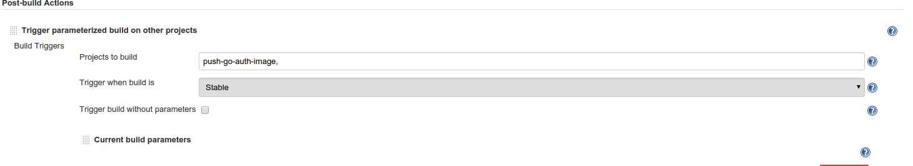
最后，我们需要在镜像成功上传后触发部署任务。同样的，我们也可以像其它任务一样增加一个post-build的动作。
这一步，我们将使用Rancher Compose命令行来：停止环境、从DockerHub获取最新镜像、重启环境。 一个简单的提醒：Updates接口正在处于开发调整阶段，随时会发生变化。 后续，一定会有新的功能和改进增加到接口中，请随时关注 文档更新。 在使用Jenkins实现自动任务之前，让我们先手动执行一下这些步骤。
首先，停止所有的服务(auth service, load balancer and mysql)，获取最新版本镜像，启动所有服务。 然而，这个可能比我们设想的只在长测环境中更新应用要差一些。为了更新应用，我们首先停止auth-service，这块可以通过使用Rancher Compose命令行实现。
# If you not have already done so # git clone https://github.com/usmanismail/go-messenger.git # cd go-messenger/deploy rancher-compose --project-name messenger-int \ --url http://YOUR_RANCHER_SERVER:PORT/v1/ \ --access-key\ --secret-key \ --verbose stop auth-service
这将停掉运行auth-service的所有容器，你可以通过Rancher UI检查一下，看服务状态是否为Inactive。 接下来，我们告诉rancher我们需要下载的镜像版本。注意，我们这里指定的版本将在docker compose文件中被替换( image: usman/go-auth:${auth_version} )。
auth_version=${version} rancher-compose --project-name messenger-int \ --url http://YOUR_RANCHER_SERVER:PORT/v1/ \ --access-key\ --secret-key \ --verbose pull auth-service
现在，我们已经下载来所有我们想要的镜像，接下来就剩下启动应用了。
auth_version=${version} rancher-compose --project-name messenger-int \ --url http://YOUR_RANCHER_SERVER:PORT/v1/ \ --access-key\ --secret-key \ --verbose start
Rancher 0.44.0以后的版本，上述3步命令也可以用force-upgrade参数合并成一步。
auth_version=${version} rancher-compose --project-name messenger-int \ --url http://YOUR_RANCHER_SERVER:PORT/v1/ \ --access-key\ --secret-key \ --verbose up -d --force-upgrade --pull --confirm-upgrade auth-service
现在我们知道在Jenkins里都要做什么了。首先创建一个freestyle的项目，命名为deploy-integration。 创建一个带参数的构建，用GO_AUTH_VERSION作为参数。接下来，从上游的build-go-auth任务拷贝所有的产品。
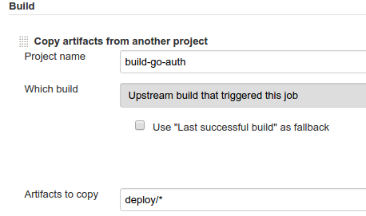
最后，我们为之前定义的Rancher Compose启动命令增加一个Execute Shell的步骤。 注意，你还是将首先需要在Jenkins里设置好rancher-compose并使其在系统路径下可用。这里我们每次重新安装compose是为了简化操作。 你需要指定“Rancher API key”，“Rancher API Secret”和“Rancher server URL”做完你运行脚本的一部分。 像之前提到的一样，你也可用使用Masked Passwords来保护你的密码。整个脚本看起来是下边这样的。 注意，当你有多个Rancher Compose节点时，负载均服务可能需要在不同的主机上启动，所以你的Route53配置也可能需要更新。
cd deploy wget https://github.com/rancher/rancher-compose/releases/download/v0.5.1/rancher-compose-linux-amd64-v0.5.1.tar.gz -O - | tar -zx mv rancher-compose-v0.5.1/rancher-compose . rm -rf rancher-compose-v0.5.1 ./rancher-compose --project-name messenger-int \ --url http://YOUR_RANCHER_SERVER:PORT/v1/ \ --access-key\ --secret-key \ -- verbose up -d --force-upgrade --pull --confirm-upgrade auth-service
增加了2个Jenkins任务以后，看起来是下边这个样子的。每次代码提交，现在都会自动触发编译和自动测试。 然后进行打包，通过集成测试后，最终发布，以供人工测试。下述的5个步骤，为从开发到测试到部署提供了很好的参考。 持续发布环境，不仅保证了自动化测试的自动运行，也为手工测试提供了快速的响应基础。 同时，这也为生成环境的持续发布、运营工具的测试，形成了一个良好的模型基础。
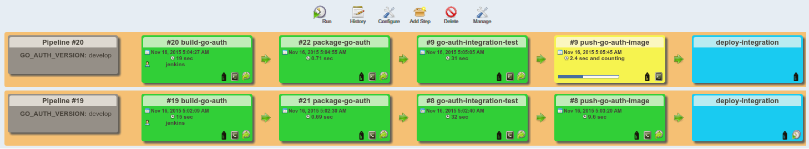
当我们把代码部署到了一个持久的可测试的环境，我们就可用让QA工程师team对这些改动进行人工验证了。 一旦验证通过，我们就可用发布和生成环境的部署了。发布的步骤和使用git进行分支很像，这个可用参考之前的文章。 具体参考下边的命令。将会创建一个发布分支，启动清扫动作，比如更新版本号，做发布前最后的代码修正，等等。
git flow release start v1 Switched to a new branch 'release/v1' Summary of actions: - A new branch 'release/v1' was created, based on 'develop' - You are now on branch 'release/v1' Follow-up actions: - Bump the version number now! - Start committing last-minute fixes in preparing your release - When done, run: git flow release finish 'v1'
完成以后，我们运行release finish命令将分支合并到主分支。这样，主分支就会包含所有的发布代码。 另外，每一次发布都会打标签，所以会生成一个标签的历史结构。 因为我们不希望合并入更多的变更，让我们赶快结束发布，命令如下。
Switched to branch 'master' Merge made by the 'recursive' strategy. README.md | 1 + 1 file changed, 1 insertion(+) Deleted branch release/v1 (was 7ae8ca4). Summary of actions: - Latest objects have been fetched from 'origin' - Release branch has been merged into 'master' - The release was tagged 'v1' - Release branch has been back-merged into 'develop' - Release branch 'release/v1' has been deleted
最后一步，将代码推送到远端库。
git push origin master git push --tags //pushes the v1 tag to remote repository
如果您使用的是Github来托管代码，你会看到一个新的发布版本。
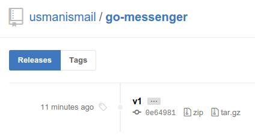
使用同样的版本推送到DockerHub也是一个不错的主意。想要这样做的话，让我们先触发我们的第一个CD任务。 如果你还有印象，之前的文章中提到来如何配置Git Parameter插件来获取所有的标签。这个在开发中用到比较多，当我们手动时，我们直接选择标签就好了。 比如下边的选项，有两个发布版本。我们选择其中一个，来完成接下来的集成和发布。
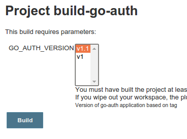
这会经历下述步骤，部署我们的1.1版本应用到长测集成环境中，只需简单的鼠标点点：
1.从git库中选择发布版。
2.构建应用并运行单元测试。
3.创建新镜像并打标签v1.1(如：usman/go-auth:v1.1)。
4.运行集成测试。
5.推送镜像(usman/go-auth:v1.1)到DockerHub。
6.部署这个版本到我们对集成环境。
今天的文章中，我们讲述来如何完成持续发布，将一个简单的应用部署到集成环境中去。 同时，我们也探讨了DNS和HTTPS环境的支持，从而实现一个更加稳定、安全的可用环境。 在下一篇文章中，我们将继续探讨生成环境的持续部署。在发布变更的同时，保证环境的可用性，确保理想上的0宕机时间。 此外，使用负载均衡、DNS等方式实现降低成本、失败恢复、实现高可用等，也是我们非常关注的。
原文链接：Docker-Based Build Pipelines (Part 2) – Continuous Deployment
译于：2016.3.21